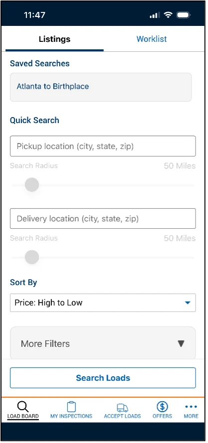
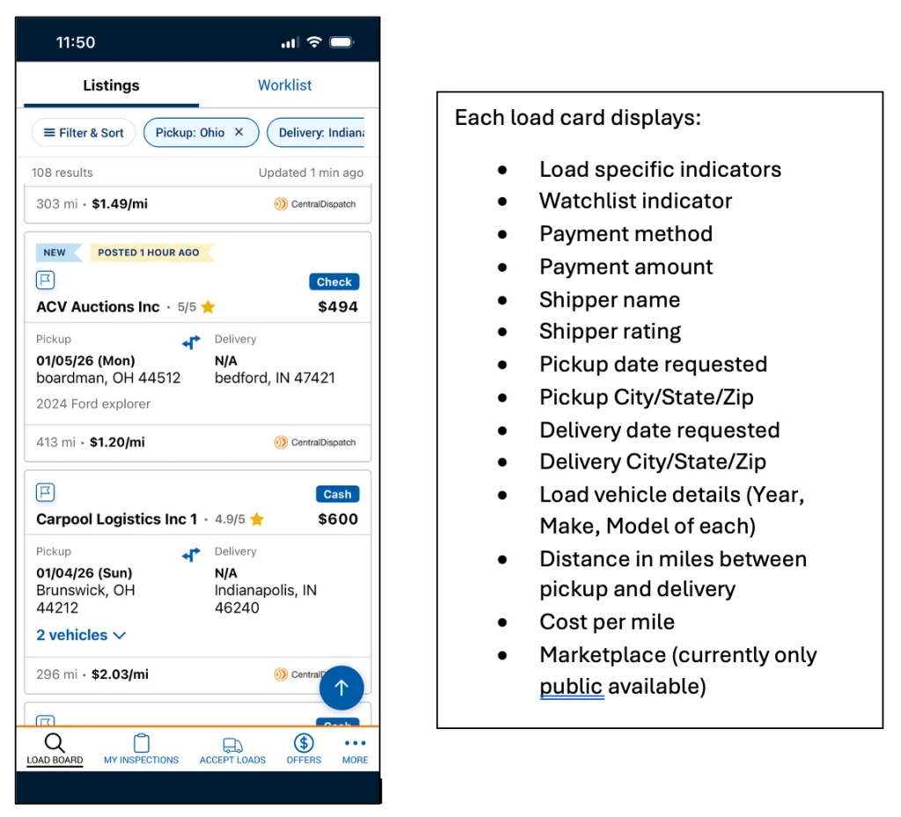

Professional work · Public overview
Central Dispatch
Mobile search for carriers in the Central Dispatch marketplace.

Search
- Contribution
- Search launch with research, product, and engineering.
- Evidence
- Published product flow and launch announcement.